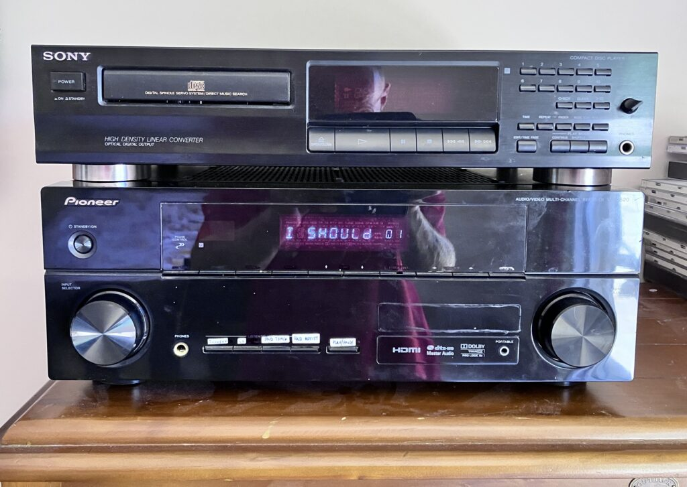
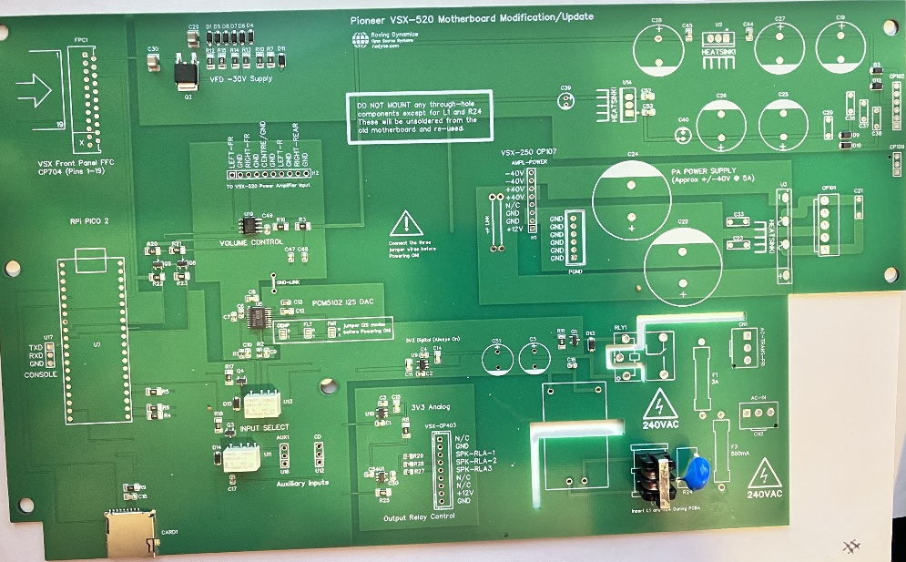
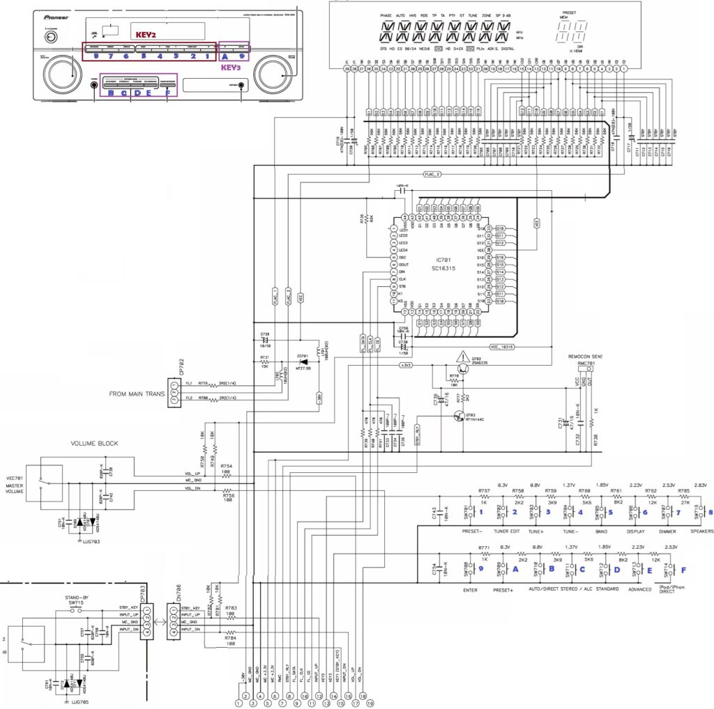
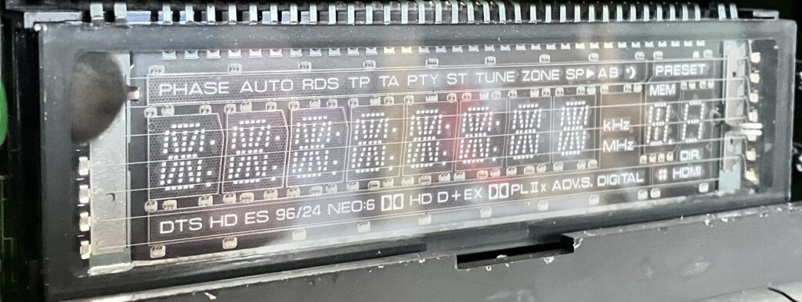
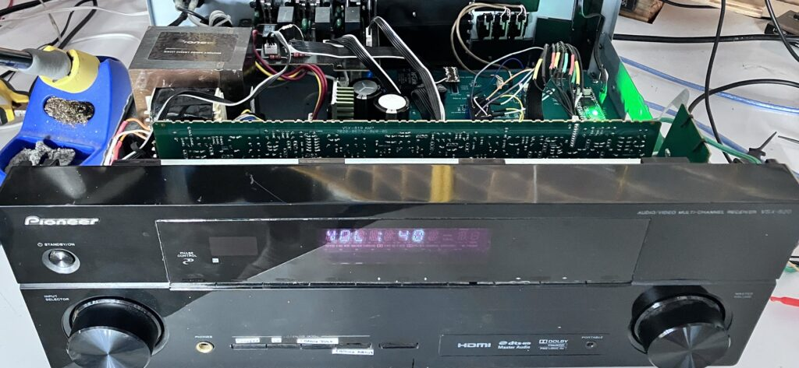

A mate gave me a broken Pioneer VSX-520 surround sound amplifier to fix about 5 years ago, and despite the extremely good service manual that came with it I could not figure out the problem. I went through all the usual suspects for this model, diligently worked through the fault repair flow diagrams and finally got to the bit where it said “replace the main board”. I then moved further, seeking every obscure YouTube repairer, also to no avail, and in the end I decided it was not worth the effort and it went onto my ‘to-do later’ shelf in the workshop.

My New Bedroom Stereo System
The To-Do moment reared its head last month. My CD player started to play up with some of my CD’s due to the scratching on them, this was causing them to skip tracks or even refuse to play. As I mostly play CD’s when I’m sat in the bath, it gets really annoying when that happens and I have to get out all wet! I don’t remember being so careless with the CD’s to get them in this state, but I guess I fell for the hype at the time about how much more resilient they would be than vinyl (Yeah right!)
Luckily about twenty years ago I ripped my favourite CD’s to MP3 files, and digging through my backups the other day I found all 30GB of them at 196KBit/s, all arranged nicely in the correct folders by group/album/track. This got me thinking about making a little jukebox player for them, maybe reusing one of my million dev boards I seem to have lying around, adding a SD card, an I2S DAC and a bit of software to tie it all together.
The problem was that I also wanted something that would fit in nicely with my stereo system, a ugly enclosure was not going anywhere near my bedroom. That was when I remembered I had the perfect enclosure, one which looked the part, and one where I knew the amplifier, display and power supply parts were working OK. So the big question was how much of it could I re-use?
Like I said, the service manual for this amplifier is quite comprehensive. Each circuit board is shown, with a full schematics, PCB layouts and inter-board wiring diagrams, as well as helpful test procedures; The front panel was simply a bunch of switches and a custom Vacuum Fluorescent Display driven by an SC16315 driver chip. I also knew the power amplifier board worked (a really nice Class AB design), as I had unplugged the main board at the time and tested it with a signal generator and bench power supply. Also the main transformer was good as I had measured the voltages. The two sub-boards containing the DSP and video stuff were very proprietary and absolutely no use to me and they could go, and unfortunately the motherboard was highly integrated with the processor controlling it all, and again highly proprietary, and had to go. But to me it looked like the core parts would be fine, and if I could re-use the parts above, especially that classy AB amplifier board, and substitute a dev board to hold it all together then winner-winner, I might get a good looking MP3 jukebox.
I also kind of wanted to also do this on the cheap, (contemplating full retirement and not having any paying customers at the moment). Luckily for me the old Pioneer main board was single-sided, which meant even a ham-fisted old git like me could easily unsolder and re-use as many of the connectors, capacitors and regulator chips as I could salvage. But being a dodgery old bastard, there was also no way I was soldering in a bunch of surface mount stuff! So I knocked out a schematic, shadowing the old connectors as closely as possible, added a 40-pin header for my Raspberry Pi Pico2 dev board, a PCM5102 I2S DAC, an input selector circuit, and a volume control chip. I then added all the connectors for the front panel, PSU and amplifier, un-mounted so I could transplant them here. With my circuit double-checked, I crossed my fingers and fired the design off to JLPCB. What I got back was below:

Which, when I soldered on the missing components and fitted it in the amplifier, looked quite neat:

Not surprisingly I did make a few mistakes. Luckily none of them were unrecoverable! The first mistake was easy to fix, I forgot a bunch of pull up resistors for the front panel switches, and being on an analog input I could not get any voltages off them. The second mistake was a bit more annoying, and harder to recover from, I used a pair of G6KU-2F-TR-DC5 relays instead of the G6K-2F-TR-DC5 relays to switch the source input, the G6KU being the latching type, which need to be driven by a H-Bridge to unlatch them! A rework would cost me another $100, so sod that, the actual insides of my neat circuit board now has a pair of crappy SPDT relays glued to the board (I did say I was doing this on the cheap didn’t I?)
It all powered on, without incident (or smoke) and all the voltages were present and correct. A quick signal generator input to the amplifier confirmed the PSU, the amplifier and the speaker output were good so the next step were to get the various bits working: These were the I2C volume control, a PT2259 chip part LCSC had in stock that was cheap (you sensing a theme here?) but had a sort of usable data sheet, the input selectors, and output relays, (just GPIO pins). Then for the front panel, a SPI SC16315 VFD display driver, a pair of rotary switches for selector and volume, and a bunch of individual key switches on a resistor chain. (See schematic extract below)

VSX-520K Front Panel circuit (from Pioneer Service Manual)
Back to BASICs
I wanted an easy way to test all the parts individually. Normally I would pile straight into C, and I was not looking forward to it, and that was when I stumbled upon MMBASIC specifically MMBASIC for the Raspberry Pi PICO called PicoMite. I kind of shrugged it off at first as who uses BASIC in 2025, but there again this is from a guy who uses PASCAL! Also with MMBASIC you could issue commands directly from the prompt. E.g. entering PIN(GP15)=1 would turn on my power relay; Last time I tried BASIC was back in 1988 on an Atari ST, so I remembered enough and started testing the hardware without really thinking. I am glad I did.
The PicoMite manual is easy to understand and well written but was a bit long, so being lazy first I tried vibe coding the commands. Gemini tried its best, and got the gist, but there must have been a few old versions of the language that it got its knickers in a twist with, giving me all sorts of commands with syntax errors, (eg telling me the function to get the free memory was mm.info(free ram) ). Giving Gemini the latest PicoMite manual helped, but I still had to look at the forums (the back shed) for help. However to cut a long story short, between the manual and the forum I got most of what I wanted so it was kind of easy, and I managed to quickly develop and test code for every part of the board. Within a few days, I could pop in my 32GB SD card, select the artist I want to play and have it play the album for me, using the selector wheel to skip up and down songs/artists, and using the volume control and other switches without real issue.
I expected the VFD display to be the difficult part, but it was surprisingly easy as the system was configured for 12 digits and 16 segments, and you could easily see the 12 grid regions on the display if you took the red filter off the front panel. I wont bore you with it, as it is in the attached code with the schematic and CAD files.

Also the six Zener diodes in series for the VFD HV supply were a few cents cheaper than a single 30V Zener in case you were wondering, I could not reuse the old diode as I cracked the glass trying to extract it off the old motherboard! Below, you can just see the relay hack on the working motherboard if you look hard enough.

It was at this point that I was about to go back to VS Code and knock it all out in C, when I actually realised how utterly stupid that would be – I had 90% of the functionality already and it worked fine! So bottom line is I tidied up the MMBASIC program popped the lid back on the amplifier and it now sits pride of place in the bedroom connected to the 2 speakers there, and the 2 in the bathroom. Press the power button and it carries on from the song it left off. You would not know it was not written in C as it is very responsive, why did I not know about this program before?
You can see it here on YouTube In Action. The video is unfortunately minus the warm-rich, copyrighted music, but the quality of the sound is about as good as you get with MP3 and to an old git like me, indistinguishable from a CD. So all in all I’m pretty happy.
A few little things are still required if I am honest. The code seems to work just fine, but probably has more bugs in it than a tramps sleeping bag; I am sure someone who knows MMBASIC would be laughing their heads off. I may revisit it sometime, probably when one of those bugs rears its head, and I can be arsed undoing the screws holding the lid on. (Hmmm I probably should invest in a panel mounted USB C connector for the back)
The 8-character alpha-numeric display is totally retro, but also pretty lame for displaying song titles, but hey I know all the songs already so whatever! I have however ordered some dry-transfer letters to replace the markings on the switches on the front panel as the temporary crappy-white stickers just have to go!.
I have wired up the front-panel Infra-Red sensor, but I don’t have the remote to test it and don’t really need it, but for the future, who knows? I also need to work out why the PT2259 is making an annoying click every time I send a new volume setting; Again picking a cheaper chip with so little information, sometimes has its down-sides. In hindsight, the Pioneer audio input riser board I threw away which has an input selector chip and volume control might have been a better bet to try and reverse engineer. I also have a broken Pioneer VSX-517 but the mains transformer and supply are toasted in that one, but now I’ve got the buzz, maybe I should give that a go next?
Finally a BIG shout out to the guys who wrote the PicoMite MMBASIC system (Geoff Graham and Peter Mather), and to Pioneer for both helping me get this far, and ensuring another electronic item did not end up as landfill.
I don’t expect anyone to actually make this (its mainly for inspiration) but if you do, then the CAD files and source are below.
- EasyEDA Schematic/PCB files (With fix for PU resistor and relay) => Here
- Link to PicoMite Ver 6.01.00 basic manual and firmware => here
- MMBASIC Program => Here
Note the comments at the start of the program, as some configurations have to be set up once, outside of the program code, using the option commands in MMBASIC. I have added the code and schematic below for completeness, but they are just copies of the links above.
Discussion on Hackaday => Here, and on the RPi Forums => Here
MMBASIC Source Code
' VSX-AMPLIFIER-JUKEBOX (unfinished but works well)
' No Copyright or restrictions. Completely Free to use. Rodyne.com 2026
' NOTE: Requires a PICO 2 (RP2350) Overclocked to 250Mhz to do the MP3 Decoding.
' The board I am using is a Pimaroni Pico Plus with the 80 pin RP2350B chip so a
' couple of the pins are different from the normal pico2: We use GP41 instead
' of GP27 and GP42 instead of GP28 for the analogue inputs, otherwise same as pico2
' SYSTEM COMMANDS BELOW MUST BE RUN FROM PROMPT (NOT PRGM) TO CONFIGURE A NEW
' BOARD SEE MANUAL FOR DESCRIPTION OF WHAT THEY MEAN:
'OPTION HEARTBEAT OFF ' Turn off the green flashing light for bedroom!
'OPTION SYSTEM SPI GP2, GP3, GP4 ' Config SPI FOR SD CARD READER
'OPTION SDCARD GP22 ' Config SD Card reader chip select pin
'OPTION AUDIO I2S GP16, GP18 ' Config I2S FOR PCM5102 DAC
'OPTION CPUSPEED 250000 ' Give CPU more umph! to handle mp3 decoding
'Global variables
DIM VFDfont(91) as integer ' For the VFD display SC16315 chip conv ASCII to font
DIM artists$(400) length 40 ' Upto 400 artists (I have 122)
DIM tracks$(300) LENGTH 128 ' Upto 300 mp3 tracks per artist (128 bytes is max filename)
dim DispStr$ ' What will be displayed on VFD, scrolls if bigger than 8
DIM INTEGER SelectWheelState,PrevGP0,VolumeWheelState,PrevGP1
DIM integer NumArtists,NumTracks,CurrentTrack,CurrentArtist,key3
DIM integer CurrentVolume,CurrentInputSource,ArtistFinished,TrackTimer
dim integer DispPos,TrackSS,TrackMM,LastDP
'memory ' Not sure how big the MP3 buffer is/needs to be so keep above arrays reasonable
setpin gp6, gp7, i2c2 ' Init PT2259 volume chip - def I2C Addr = &H44 (7-bit)
SETPIN GP10, DOUT ' SC16315 CLK (IDLE = HIGH - MODE 3)
SETPIN GP5, DOUT ' SC16315 STB (IDLE = HIGH)
SETPIN GP11, DOUT ' SC16315 DIN
SETPIN GP15, DOUT ' MAINS-POWER RELAY (0=POWER-OFF)
SETPIN GP14, DOUT ' MUTE SPEAKERS (0=Speakers muted)
SETPIN GP19, DOUT ' INPUT SOURCE RELAY (GP19=0=I2S, GP19=1=CD OR AUX)
SETPIN GP20, DOUT ' INPUT SOURCE RELAY (GP20=0=CD PLAYER, GP20=1=AUX)
SETPIN GP0, DIN, PULLUP ' ROTARY ENCODE SELECT WHEEL DN (0V ACTIVE)
SETPIN GP21, DIN, PULLUP ' ROTARY ENCODE SELECT WHEEL UP (0V ACTIVE)
setpin gp0, INTb, SelectWheelInterrupt
SETPIN GP1, DIN, PULLUP ' ROTARY ENCODE VOL CONTROL DN (0V ACTIVE)
SETPIN GP13, DIN, PULLUP ' ROTARY ENCODE VOL CONTROL UP (0V ACTIVE)
setpin gp1, intb, VolumeWheelInterrupt
SETPIN GP26, DIN, PULLUP ' STANDBY "POWER" BUTTON (0V ACTIVE)
SETPIN GP12, DIN ' IR INPUT (FUTURE USE)
SETPIN GP42, ARAW 'KEY2 (GP28 ON NORMAL PICO) N/U yet
SETPIN GP41, ARAW 'KEY3 (GP27 ON NORMAL PICO)
'
' For the SC16315 VFD Display driver we only need to send clock/data and cs, it is
' SPI protocol but if we use SPI we waste a pin, plus at the time of designing I
' was not sure I could have the SD Card and the display working together so I thought
' I would not waste a pin and bit bang the data out (the pioneer does not use the
' SC16315's keyboard scan so we do not need MISO)
SUB SPISendByte(dat)
LOCAL i
FOR i = 0 TO 7
PIN(GP11) = dat AND &H01 ' Toggle MOSI LSB First
PIN(GP10) = 0 ' clock hi
dat = dat >> 1 ' shift bits to ready next bit
PIN(GP10) = 1 ' clock low
NEXT i ' rinse/repeat until all 8 bits gone
END SUB
' Init the SC16315 VFD Driver (Flowchart on Page 10 of SC16315S datasheet)
SUB InitVFD
PIN(GP5) = 0 ' COMMAND: set Display Mode 12 digits/16 segments - last 2 chars n/u
SPISendByte(&H08)
PIN(GP5) = 1
PIN(GP5) = 0 ' COMMAND: Set data: Write to Display RAM, Auto-Increment
SPISendByte(&H40)
PIN(GP5) = 1
PIN(GP5) = 0 ' COMMAND 3: Set RAM Address to 00H Auto increment
SPISendByte(&HC0)
FOR i = 1 TO 36 ' write 0 to all RAM addresses (CLR RAM)
SPISendByte(0)
NEXT i
PIN(GP5) = 1
PIN(GP5) = 0 ' COMMAND 4 : Display OFF
SPISendByte(&H80)
PIN(GP5) = 1
END SUB
' The display has 12 characters, character 3 and character 12 are the symbols that
' we do not use, the other 10 are split into 8 alphanumeric and 2 numeric as below
'
' +---+---+---+---+---+---+---+---+ +---+---+
' | 11| 10| 9 | 8 | 7 | 6 | 5 | 4 | | 2 | 1 |
' +---+---+---+---+---+---+---+---+ +---+---+
'
' So to display HELLO we send "H" to char 11, "E" to char 10.. etc
' Each character has up to 16 segments in the SC16315 mode pioneer have used, but
' the SC16315 has upto 24 segments so the last 8bits are not used, thus we have to
' map each ASCII char to a 16 bit (2byte) bitmap this is done in the VFDFont()
' array so each character is two bytes with the font data and a blank 0x00 byte.
' I'm Pretty sure after the init I dont need to keep sending the COMMANDs for mode
' and data but that is what the datasheet example says, and it works, so whatever..
SUB PrintVFD dtext$ ' Print text$ on VFD (String of exactly 10 characters)
LOCAL i, charCode, segData
dtext$ = UCASE$(dtext$ + " ")
PIN(GP5) = 0 ' COMMAND: set Display Mode 12 digits/16 segments - last 2 chars n/u
SPISendByte(&H08)
PIN(GP5) = 1
PIN(GP5) = 0 ' COMMAND: Set data: Write to Display RAM, Auto-Increment
SPISendByte(&H40)
PIN(GP5) = 1
PIN(GP5) = 0 ' COMMAND 4 : Display OFF
SPISendByte(&H88)
PIN(GP5) = 1
PIN(GP5) = 0 ' COMMAND 3: Set RAM Address to 00H Auto increment
SPISendByte(&HC0)
i=11
' Immediately Send 12 digits using ASCII segment data from font table
DO while i>0
charCode = ASC(MID$(dtext$, i, 1))
IF charCode < 32 OR charCode > 90 THEN charcode = 32
segData = VFDfont(charCode) ' get ASCII->segment conversion
SPISendByte(segData AND &HFF) ' Low Byte (Segments 1-8)
SPISendByte((segData >> 8) AND &HFF) ' High Byte (Segments 9-16)
SPISendByte(0) ' 3rd Byte (Extra segments/Icons)
i=i-1
LOOP
PIN(GP5) = 1
PIN(GP5) = 0 ' Finally Send instruction for Display ON at full brightness
SPISendByte(&H8e)
PIN(GP5) = 1
END SUB
' The PT2599 has a basic and hard to find datasheet, there is a noticable click
' when I send a command to set the volume, I have tried a few variations on the
' data sent but dont see an easy way to get rid of it (bugger!) a hard mute input
' would have been too much to ask!
' Looking back I should have used one of the combined volume control, selector
' chips LCSC seems to have a few of such as the ROHM BD37534FV-E2 as I could have
' also ditched the input relays and had a few more inputs available for lower $ (sigh!)
SUB SetVolume(percent, DoVFD) ' Set Volume between 0% (mute) and 100% (full)
LOCAL db, tens, ones, tempstr$
db = 79 - INT(percent * 0.79)
tens = INT(db / 10) +&HE0
ones = db MOD 10 +&HD0
IF percent=0 then
I2C2 WRITE &H44, 0, 1, &H77 ' Mute ON
ELSE
I2C2 WRITE &H44, 0, 3, &H74, tens, ones ' Unmute and set L&R to -20dB
ENDIF
if DoVFD=1 then PrintVFD("VOL: " + str$(percent))
END SUB
' I use two relays to select 3 input sources, the primary one being the I2S DAC so
' I can play my MP3's, but setting relay U15 lets us select the CD input and if you
' also set U11 then the AUX input. So basically we are just toggling 2 GPIO pins
SUB SelectInput(src, DoVFD)
if CurrentInputSource <> src then
IF src=1 THEN
PIN(GP20) = 1 ' 1 = Select CD PLAYER
PIN(GP19) = 0
if DoVFD=1 then PrintVFD("SRC: CD ")
elseif src=2 THEN
PIN(GP20) = 1 ' 2 = Select AUX
PIN(GP19) = 1
if DoVFD=1 then PrintVFD("SRC: AUX")
ELSE
src = 0
PIN(GP19) = 0 ' off/dont-care
PIN(GP20) = 0 ' 3 = Select MP3
if DoVFD=1 then PrintVFD("SRC: MP3")
ENDIF
CurrentInputSource = src
endif
END SUB
' This next bit you just send it a folder name (eg B:/genesis) and it will find
' all the MP3 files under it. eg the next level down is an album folder so we
' will retrieve the tracks under the album folder. eg it will get files like:
' B:/genesis/foxtrot/suppers ready.mp3 or
' B:/genesis/duke (Full album).mp3
' these are populated in the tracks$() array which is cleared as you select the
' artist. I could not see any comments about size restrictions on the PLAY MP3
' so hoping all good long term
SUB GetTrackList path$ AS string, DoPrint AS Integer
local integer ii, NumAlbum
LOCAL SubDir$(50) ' Allow upto 50 sub-folders for albums if required
local string file$
CurrentTrack=0
Numtracks=0
NumAlbum=0
for ii=0 to BOUND(tracks$())
tracks$(ii)=""
next ii
' All tracks in root artist folder
file$=DIR$(path$+"*.mp3", file)
do while file$<>"" and NumTracks<bound(tracks$())
tracks$(NumTracks)=path$+file$
if DoPrint then print " - Add track "+str$(NumTracks+1)+" : '"+tracks$(NumTracks)+"'"
file$=DIR$()
NumTracks=NumTracks+1
loop
' Second, find all subdirectories (albums)
file$=DIR$(path$+"*", dir)
do while file$<>"" and NumTracks<bound(subDir$())
IF file$ <> "." AND file$ <> ".." THEN
SubDir$(NumAlbum)=path$+file$
if DoPrint then print " +album '"+SubDir$(NumAlbum)+"'"
NumAlbum=NumAlbum+1
endif
file$=DIR$()
loop
' Get all the tracks in these subdirectories
for ii=0 to numAlbum
file$ = DIR$(subdir$(ii) + "/*.mp3", FILE)
do while file$<>"" and NumTracks<bound(tracks$())
tracks$(NumTracks)=SubDir$(ii)+"/"+file$
if DoPrint then print " - Add album-track '"+tracks$(NumTracks)+"'"
file$=DIR$()
NumTracks=NumTracks+1
loop
next ii
print "Select Artist '"+path$+"': " + str$(NumAlbum) +" Albums, "+ Str$(NumTracks) + " Tracks"
print ""
END SUB
sub PlayTrack
if CurrentTrack<NumTracks then
play mp3 tracks$(CurrentTrack)
print "Playing Track " +str$(CurrentTrack+1) + " : "+tracks$(CurrentTrack)
DispPos=0
TrackSS=0
TrackMM=0
LastDP=0
ELSE
CurrentArtist=CurrentArtist+1
ArtistFinished=1
endif
end sub
'###################################
'#### MAIN PROGRAM STARTS HERE ####
'###################################
ProgramInit:
' Initialise pin and variables to default states
PIN(GP10) = 1 ' SC16315 CLK (IDLE = HIGH - MODE 3)
PIN(GP5) = 1 ' SC16315 STB (IDLE = HIGH)
pin(gp15) = 0 ' MAINS-POWER RELAY (0=POWER-OFF)
pin(gp14) = 0 ' MUTE SPEAKERS (0=Speakers muted)
PIN(GP19) = 0 ' INPUT SOURCE RELAY (GP19=0=I2S, GP19=1=CD OR AUX)
PIN(GP20) = 0 ' INPUT SOURCE RELAY (GP20=0=CD PLAYER, GP20=1=AUX)
SelectWheelState = 0
PrevGP0=pin(GP0)
VolumeWheelState = 0
PrevGP1=pin(GP1)
I2C2 OPEN 100, 100
'Initialise variables when amplifier looses power - preserved during standby
CurrentArtist = 0
CurrentTrack = 0
NumArtists=0
CurrentVolume = 20 ' 20% (quiet)
CurrentInputSource = 0 ' 0=MP3, 1=CD - also had 2=AUX but problem with relay :-(
RESTORE fontdata ' Load the VFD display SC16315 segment fontdata array
FOR ii = 32 TO 90
READ VFDfont(ii)
NEXT ii
' Get list of all artists from SD Card root folder
dim string f$
f$=DIR$("B:/*", DIR)
do while f$<>"" and NumArtists<bound(artists$())
artists$(NumArtists)=f$
f$=DIR$()
NumArtists=NumArtists+1
loop
Print str$(NumArtists) + " Artists found on disk"
ArtistFinished=1
TrackTimer=0
ProgramStart:
SETTICK 1000,TimerInterrupt,1
print "Waiting power on.."
'Note The main Amplifier CCT is de-powered at this time so cannot initialise anything!
DO WHILE PIN(GP26) = 1 ' WAIT FOR POWER BUTTON TO BE PRESSED
LOOP
pin(gp15) = 1 'power on main amplifier hardware
PAUSE 250
DO WHILE PIN(GP26) = 0 ' WAIT FOR POWER BUTTON TO BE RELEASED
LOOP
pause 200 ' 200mS delay for the SC16315S VFD Driver and PT2259 volume control
VolumeWheelState = 0
SelectWheelState = 0
InitVFD
PrintVFD(" RODYNE 26") ' init the display and display company/welcome message
I2C2 WRITE &H44, 0, 1, &HF0 ' PT2259 volume control init/Reset/Clear registers
SetVolume(CurrentVolume,0)
pause 2000
PrintVFD(" WELCOME ")
SelectInput(CurrentInputSource,0) ' re-select correct input source
pause 1000
pin(gp14) = 1 'turn on speakers
DO ' NORMAL OPERATION LOOP (UNTIL POWER OFF/STBY BUTTON PRESSED)
if ArtistFinished=1 then
IF CurrentArtist<NumArtists then
GetTrackList "B:/"+artists$(CurrentArtist)+"/",0 'get selected artists songlist
CurrentTrack=0 ' start at track 1
Playtrack ' and play song
endif
ArtistFinished=0
pause 500
endif
if mm.info(sound)="OFF" then ' No music playing (after init or track finished)
print "Track finished"
if CurrentTrack<NumTracks then ' If more tracks then play the next one
CurrentTrack=CurrentTrack+1 ' by incrementing the current track variable
PlayTrack
ELSE
CurrentArtist=CurrentArtist+1 ' if at end of tracklist then goto next artist
ArtistFinished=1 ' will activate the code 10 lines above
endif
pause 500
endif
if pin(gp26) = 0 then exit DO ' Exit loop if POWER OFF BUTTON Pressed
' The volume and select wheels are rotary encoders, the wheelstates are
' handled in the interrupts at the end of the code
IF VolumeWheelState=2 then ' volume turned up
if CurrentVolume<96 then
CurrentVolume = CurrentVolume+4
SetVolume(CurrentVolume,1)
endif
VolumeWheelState = 0
endif
IF VolumeWheelState=1 then ' volume turned down
if CurrentVolume>3 then
CurrentVolume = CurrentVolume-4
SetVolume(CurrentVolume,1)
endif
VolumeWheelState = 0
endif
IF SelectWheelState=1 then 'Select wheel rotated anti-clockwise
play STOP
PrintVFD("PREVIOUS ")
if CurrentTrack>0 then
print "PREV SONG"
CurrentTrack=CurrentTrack-1
else
CurrentTrack=0
endif
Playtrack
SelectWheelState = 0
pause 500
endif
IF SelectWheelState=2 then ' Select wheel rotated clockwise
play STOP
PrintVFD("NEXT ")
if CurrentTrack<NumTracks then
print "NEXT SONG"
CurrentTrack=CurrentTrack+1
Playtrack
else
ArtistFinished=1
endif
SelectWheelState = 0
pause 500
endif
' Looking at the five buttons at the bottom left of the amplifier on Key3 input
'
' +------------+------------+------------+------------+ +--------------+
' | Select MP3 | Select CD | RND Track | RND Artist | | Pause/Resume |
' +------------+------------+------------+------------+ +--------------+
'
' Get analog voltage of the Key3 input represents which button was pressed
Key3 = pin(GP41) \ 100 ' \ is integer division : makes 0-4096 value = 0-41
if Key3 <33 then ' KEY PRESSED
pause 25
Key3 = pin(GP41) \ 100 ' get value again as it can glitch
PRINT Key3 'debug
if key3=9 then ' Select MP3 (Jukebox) button pressed
SelectInput(0,1)
if mm.info(sound)="PAUSED MP3" then
play resume
pause 800
PrintVFD("-RESUME-")
endif
endif
if key3=14 then ' Select CD PLAYER button pressed
SelectInput(1,1)
if mm.info(sound)<>"OFF" then
play pause
endif
endif
if key3=19 then ' RND Track button pressed
CurrentTrack = INT(rnd*NumTracks) ' Select a random track for this artist
PrintVFD("RND TRAK ")
play stop
PlayTrack
endif
if key3=23 then ' RND Artist Button pressed
CurrentArtist = INT(rnd*NumArtists) ' Select random artist
PrintVFD("RND ARTS ")
play stop
ArtistFinished=1
endif
if key3=26 then ' Pause/resume Button pressed
print mm.info(sound)
if mm.info(sound)="PAUSED MP3" then ' Play is PAUSED so resume
play resume
PrintVFD("-RESUME-")
else ' MP3 is playing so PAUSE
PrintVFD("-PAUSED-")
play pause
endif
endif
do
pause 100
LOOP until pin(gp41)>33 ' Pause/debounce wait for user to release the switch
DispPos=0 ' Causes re-display of song title after any key press
endif
' Here we control what is displayed. When song starts display the artist/track
' info, note we can just use the track(currenttrack) as we dont have font data
' for slashes and backslashes so they appear as spaces.
' After we have displayed the track we display the song length counter in MM:SS
' format. Note the variable DispPos increments every second (see interrupt at
' end of file) until reset, as does the song timer TrackMM (minutes) and
' TrackSS (seconds) There is an initial 2 second delay before any of this
' happens so we can display any button press info
if mm.info(sound)="MP3" then 'Only do this when song playing
if DispPos<>LastDP and DispPos>2 then ' only want to call once every second
if DispPos<len(tracks$(CurrentTrack)) then ' display track info
DispStr$=tracks$(CurrentTrack)
DispStr$=MID$(DispStr$,2,LEN(DispStr$)-5)+" "
DispStr$=mid$(DispStr$,DispPos,8)+" "+STR$(CurrentTrack+1,2,0,"0")
else ' display track timer
DispStr$=str$(TrackMM,2,0,"0")+":"+STR$(TrackSS,2,0,"0")+" "
DispStr$=dispStr$+STR$(CurrentTrack+1,2,0,"0")
endif
PrintVFD(DispStr$)
LastDP=DispPos
endif
endif
LOOP ' loops indefinately until the power/standby button pressed then we exit
pin(gp14) = 0 'turn off speaker relays
CurrentTrack=CurrentTrack-1 ' set pos back to start of song being played
PrintVFD(" ") ' otherwise when we pwr-on we get last display text
' was going to save the artist/track/volume to flash, but power consumption was
' only found to be 600mW in standby and 24W when on and playing at normal volume
if mm.info(sound)<>"OFF" then ' STOP MP3 PLAYING
play stop
endif
pin(gp15) = 0 'power off main amplifier hardware
DO
pause 50
LOOP UNTIL pin(gp26) <> 0 ' Wait for power button released
pause 1000 ' Wait for sticky fingers
GOTO ProgramStart 'Program endless loop so loop back to just after initialise
'##########################################################################
'#### VFD FONT BITMAP DATA STARTS HERE ONLY ASCII 32 to ASCII 90 ####
'#### ARE REQUIRED AS WE CAN ONLY DO UPPERCASE LETTERS AND NUMBERS ####
'#### (I THINK THIS IS THE WAY YOU ARE SUPPOSED TO DO CONSTS?) ####
'##########################################################################
fontdata:
data &H0000 ' space (ASCII 32)
data &H0000 ' !
data &H0000 ' "
data &H0000 ' #
data &H0000 ' $
data &H0000 ' %
data &H0000 ' &
data &H0000 ' '
data &H0000 ' (
data &H0000 ' )
data &H0000 ' *
data &H0000 ' +
data &H0000 ' ,
data &H0300 ' -
data &H0001 ' .
data &H0000 ' /
data &HfC44 ' 0
data &H6000 ' 1
data &HDB00 ' 2
data &HF300 ' 3
data &H6700 ' 4
data &HB700 ' 5
data &HBF00 ' 6
data &HE000 ' 7
data &HFF00 ' 8
data &HE700 ' 9
data &H0003 ' :
data &H0003 ' ;
data &H0000 ' <
data &H0000 ' =
data &H0000 ' >
data &H0000 ' ?
data &H0000 ' @
data &HEE00 ' A
data &H9F48 ' B
data &H9C00 ' C
data &H7B00 ' D
data &H9F00 ' E
data &H8F00 ' F
data &HBD00 ' G
data &H6F00 ' H
data &H9090 ' I
data &HF800 ' J
data &H0E48 ' K
data &H1C00 ' L
data &H6C60 ' M
data &H6C28 ' N
data &HFC00 ' O
data &HCF00 ' P
data &HFC08 ' Q
data &HCC08 ' R
data &HB700 ' S
data &H8090 ' T
data &H7C00 ' U
data &H6028 ' V
data &H6C0C ' W
data &H006C ' X
data &H0070 ' Y
data &H9044 ' Z (ASCII 90)
'####################################
'#### INTERRUPT FUNCTIONS AT END ####
'####################################
SelectWheelInterrupt: ' Rotary encoder Falling edge triggered interrupt
NewGP0 = pin(GP0)
if NewGP0<>PrevGP0 THEN
if pin(gp21) <> NewGP0 then
SelectWheelState=1
else
SelectWheelState=2
endif
PrevGP0=NewGP0
endif
ireturn
VolumeWheelInterrupt: ' Rotary encoder Falling edge triggered interrupt
NewGP1 = pin(GP1)
if NewGP1<>PrevGP1 THEN
if pin(gp13) <> NewGP1 then
VolumeWheelState=1
else
VolumeWheelState=2
endif
PrevGP1=NewGP1
endif
ireturn
TimerInterrupt: ' track timer and position of scrolling VFD Display
TrackSS=TrackSS+1
if TrackSS>59 then ' Seconds overflow so increment minutes
TrackSS=0
TrackMM=TrackMM+1 ' minutes unlikely to overflow unless MP3 > 99 minutes long
endif
DispPos=DispPos+1 ' scroll cursor to next
IRETURN